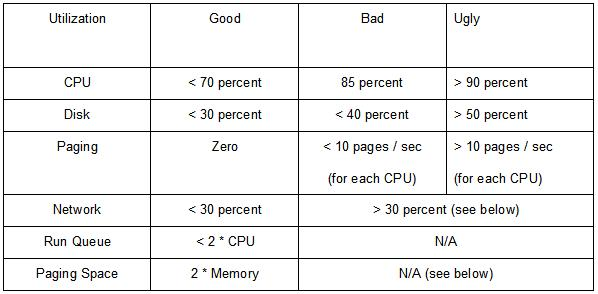

| Guideline: RID Database Server Sizing (RDBMS) |
 |
|
There are a few widely used Relational Database Management Systems (RDBMS) such as DB2 UDB, Oracle, Sybase, and Informix. Although they have the same goal, their implementations are quite different. This TP provides a generic approach to sizing a database server and then points to tools specific to each. 1 StepsThe following sections address the considerations when sizing for a database server.
2 Starting Point for Sizing RDBMSThe real problem of sizing RDBMS is accuracy. Initial sizing is a prediction based on few or no facts. Ideally, you should understand the following when sizing an RDBMS server:
In the following sections we are going to cover the general rules based on the results of experience in system sizing, benchmarks, and performance tuning. 3 RDBMS utilizationThese utilization figures are the results of benchmarks and monitoring well balance and high performance production systems.
 -Network: 30 percent of theoretical network bandwidth stops collisions on an Ethernet type network from becoming a problem, which reduces throughput. Token ring type networks can be driven to 60 percent with no drop in throughput. - Paging Space: If your system is small and has many users, we recommend three times memory. If your system is large, some systems go below this size because lots of memory is used for the RDBMS cache and it therefore does not need paging space. 4 Sizing RDBMSThe following formulas work best for UNIX based platforms. If sizing on NT or W2K use the platform specific tool in the tools section. Sizing memory To size the amount of memory required, the number of concurrent users and the query workload characteristics should be considered. More users require more memory. Large DSS style scan queries may not require as much because no amount of memory can contain the huge volumes of data. Smaller and indexed based complex queries can make use of more memory to cache data. If you do not have any information such as the number of concurrent users and the query workload characteristics, memory can very roughly be sized as five percent of the raw data size plus OS requirements and 32 MB for RDBMS processes. If you have the necessary information, the following a formula that can be used to compute necessary memory more accurately: Add all of the following: +Memory required for OS + RDBMS_code + RDMBS_data_cache + (Users * Application_Resident_Set) + Filesystem Cache See the following descriptions for the formula. An example of using this formula is shown later in this document. - OS: Start with the memory required for the operating system. (Example: AIX requires 64MB) - RDBMS_code: Add how much memory the actual code will require. (Recommend at least 32 MB) - Application Resident Set: This is the code and data of the application that each user needs to run. The resident set refers to the fact that a paging system does not need to have the entire program in memory to run and usually only a proportion of the application is required. If the exact application resident set is unavailable, the following is a starting point:
-RDBMS data cache If the RDBMS data is held in file systems, a large file system cache is required. If the RDBMS data is held in raw disks such as VSD, then the file system size can be reduced in favor of more RDBMS cache. Rules of thumb are:
For setting the size of the RDBMS cache in practice production the following is used:
-File system cache The file system cache is used by the operating system to save copies of recently used disk locks. It avoids disk I/O for performance. Even if the RDBMS uses raw devices (including Oracle on SP using the VSD raw devices), the system needs some file system cache. When the RDBMS uses the file system cache, a balance must be made between RDBMS cache and filesystem cache (in the ratio 3 to 1). The combined size will be similar to the RDBMS cache size for raw device databases. Sizing Processor There is no generic approach to sizing processor(s). To determine this you should study benchmarks specific to the hardware platform you are running. It is, however, considerably easier to decide on processing power now that you have estimated how much memory you will require. IBM benchmarks can be found at http://www.spec.org/ Sizing Disk Space The disk space can be very roughly sized via following raw data to disk space ratios as a rule of thumb. If you do not have any information, use 1: 3 raw data to disk space ratio.
For example, your raw data size was 300 GB on a DSS environment, 1.2 TB - 1.5 TB non-mirrored or 2.4 TB - 3.0 TB mirrored disk space is required. The prime RDBMS data parts of any RDBMS are:
You should add the RDBMS header for each part mentioned above. It can be roughly estimated from raw data size plus the header of RDBMS; 10 percent is recommended as a rule of thumb. Sizing the Number of Disks This will depend greatly on the disk drives available for the system you are sizing. You should decide which disk drive is good for your system based on database size and considering I/O requirements. Many small disks increase the I/O throughput but require extra adapters and PCI bus slots. Larger disks are generally less expensive per GB of storage. 5 Sizing ExampleWe are going to size the database system for an imaginary corporation Corporation.com. Some of the information below is only necessary to compute processing power, which is not done in the example. The assumed transactions of Corporation.com are:
Step 1: Sizing memory We can calculate the amount of memory using the formula mentioned above in the “Sizing memory” portion. We assume the RDBMS is based on raw devices, and application resident set size is 4 MB. We are also assuming AIX for OS requirements. Memory = AIX + RDBMS_code + RDBMS_data_cache + (User * Application_Resident_Set) + Filesystem_Cache = 64 required for AIX + 32 standard amount required for RDBMS_data_cache + (100 * 0.05 * 1024) Variable amt required (Five percent of Raw data size plus header of RDBMS) + (2000 + 50 + 5) * 4 Number of users multiplied by application resident size (4MB) + 32 File system cache = 13468 MB = 13.5 GB Step Two: Sizing Disk We assume the RDBMS header is 10 percent of raw data size. The application of Corporation.com is a typical OLTP application. So, we can use 1: 3 ratio, but in this case we consider the RDBMS header and we assume the ratio of Data: Index: Tmp / Sort = 1: 1: 1. The total size of data is estimated as follows:
Therefore, the total size of data is 330 GB. You should consider the disks for AIX, paging space, and RDBMS log. We
recommend one disk for each. Step Three: Sizing the number of disks The application of Corporation.com is a typical OLTP application, so 10 – 20 small disks for each CPU are recommended. We chose 9.1 GB SSA disks. We decide to use mirroring of AIX LVM for disk protection.
Moreover, four 9.1 GB SCSI internal disks are needed for AIX and paging space using LVM mirroring. Step Four: Sizing Processor Study appropriate benchmarks, and make a selection taking into account the amount of RAM you determined and any other factors you have available such as complexity of transactions, number of users during peak time, maximum CPU utilization, and so forth. Step Five: Configure System
Additional Tools DB2 UDB for OS/390 Estimator DB2 Estimator is an easy-to-use, stand-alone tool for estimating the performance of DB2 for OS/390 Versions 5, 6, and 7 applications. It can be run online or downloaded for mobile use. The URL: http://www-4.ibm.com/software/data/db2/os390/estimate/ |
| © Copyright IBM Corp. 1987, 2012 All Rights Reserved Property of IBM These materials are intended only for use as part of an IBM engagement |